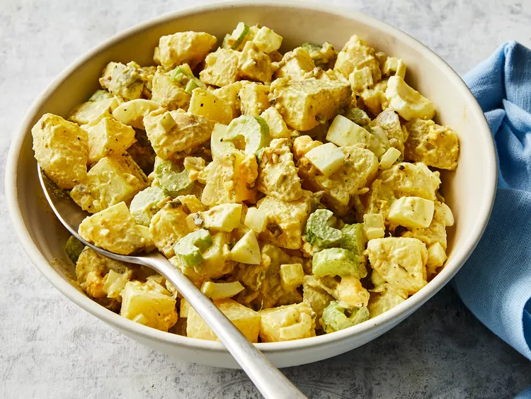

Potato Salad

Description
This potato salad recipe is for the traditional creamy type of potato salad, with eggs, celery, and relish.
It's perfect for making ahead to let the flavors develop.
Ingredients
- 5 Potatoes
- 3 Eggs
- 1 cup chopped celery
- 1/4 cup sweet pickle relish
- 1/2 teaspoon celery salt
- 1/2 cup chopped onion
- 1/4 cup mayonnaise
- 1/4 cup mustard
- ground black pepper to taste
Steps
- Gather all ingredients
- Bring a large pot of salted water to a boil. Add potatoes and cook until tender but still firm, about 15 minutes.
- Drain, cool, peel, and chop potatoes.
- While potatoes cook, place eggs in a saucepan and cover with cold water.
Bring water to a boil; cover, remove from heat, and let eggs stand in hot water for 10 to 12 minutes.
- Remove from hot water, cool, peel, and chop eggs.
- Combine the potatoes, eggs, celery, onion, relish, mayonnaise, mustard, garlic salt, celery salt, and pepper in a large bowl.
Mix together well and refrigerate until chilled.